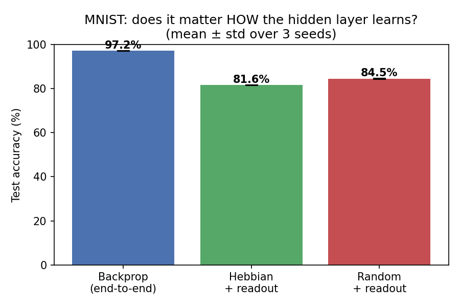
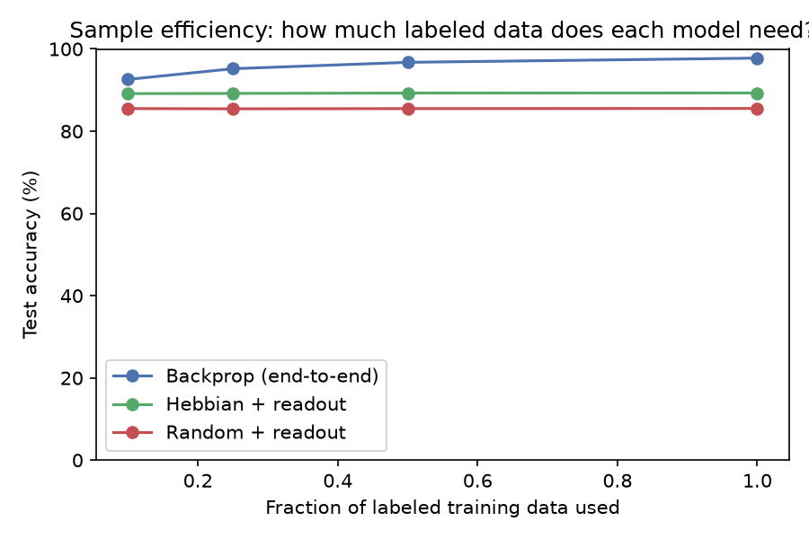
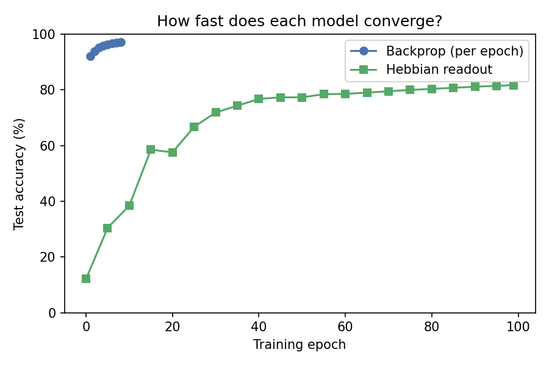
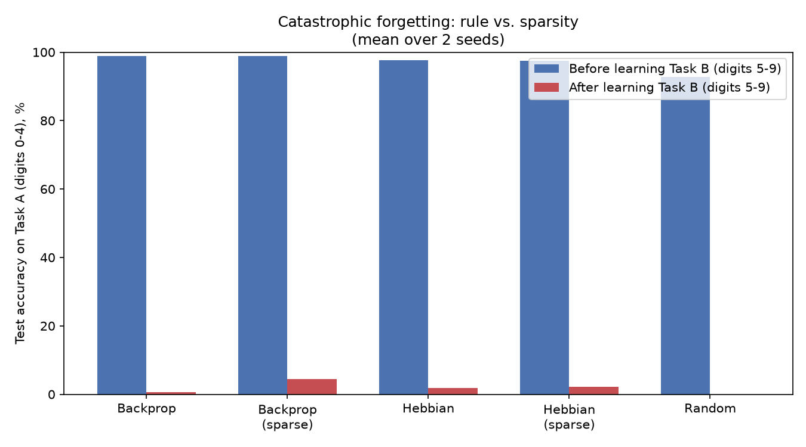
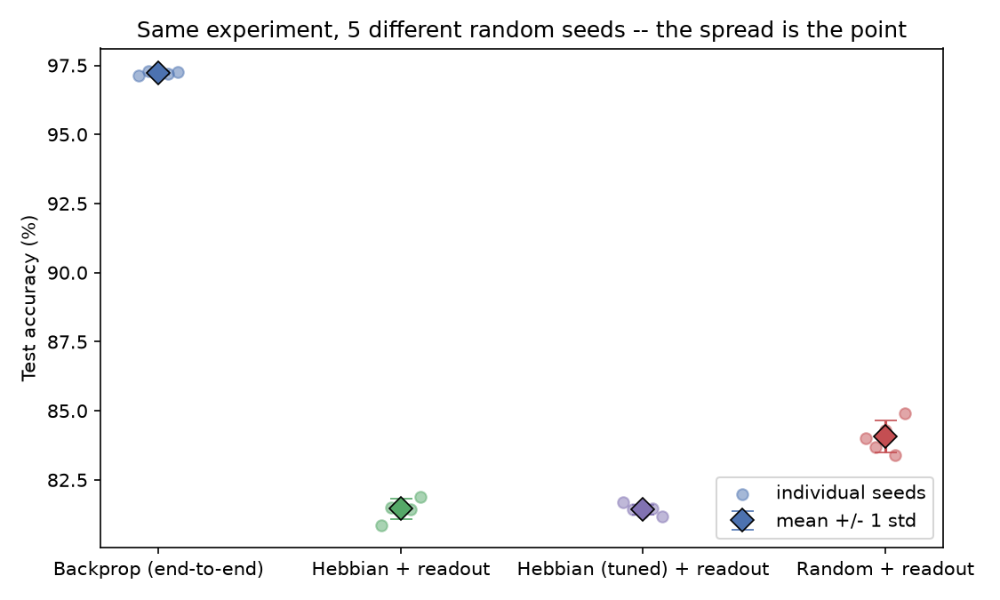
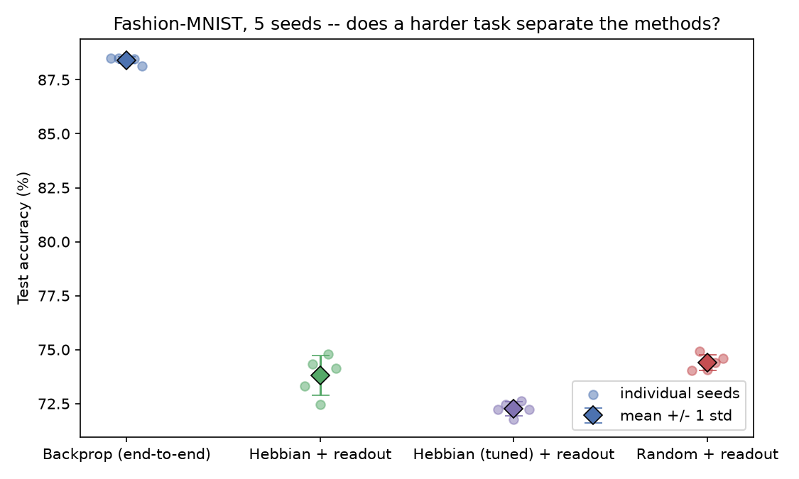
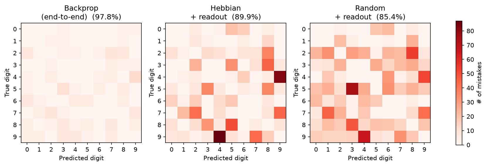
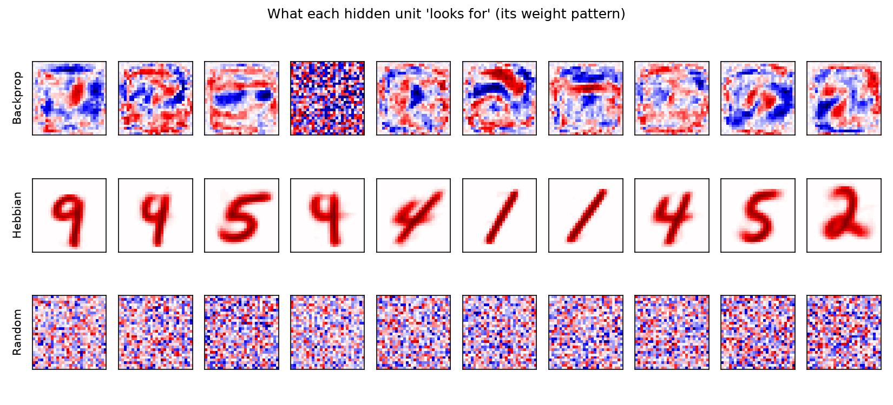
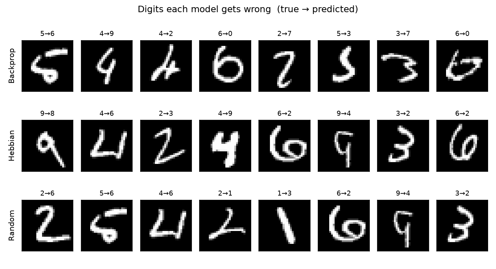

Overview
We compare two fundamentally different learning principles on the MNIST digit classification task using a shared 784 → 400 → 10 MLP architecture:
- Backpropagation — the standard deep learning workhorse. Every weight is updated via a global error signal (
loss.backward()), which is effective but biologically implausible. - Competitive Hebbian learning — a local, label-free rule. Hidden units update using only their own activations ("cells that fire together, wire together"), then a small supervised readout is trained on top.
The gap between these two approaches is the result. We also include a random-hidden-layer control to verify that any Hebbian improvement over chance reflects real feature learning, not just lucky projections.
Methods
Backprop (end-to-end)
Standard MLP trained with Adam for 8 epochs. Every weight, including the hidden layer, receives gradient information from the output loss.
Hebbian + readout
Hidden layer learns via competitive Hebbian learning (3 epochs, no labels, no .backward()). Then frozen; a linear readout is trained with Adam on the resulting features.
Random + readout
Hidden layer weights are random and never trained. A linear readout is trained on top. This control measures how much structure a random projection provides.
Hebbian (tuned)
Same Hebbian rule with more epochs (15) and an annealed learning rate (0.1 → 0.01). Used in seed-variability and Fashion-MNIST experiments.
Test Accuracy

Sample Efficiency

Training Curves

Catastrophic Forgetting

Across-Seed Variability

Fashion-MNIST

Confusion Matrices

Hidden Unit Filters

Misclassified Examples

Source Code
All experiments are implemented in Python with PyTorch. Scripts are located in src/:
- src/backprop.py — baseline MLP trained end-to-end with backpropagation
- src/hebbian.py — competitive Hebbian hidden layer + supervised linear readout
- src/compare_and_visualize_v2.py — multi-model comparison with seed averaging, sample efficiency sweep, and training curves
- src/catastrophic_forgetting.py — tests whether new learning erases old knowledge
- src/multi_seed_variability.py — same comparison across 5 seeds with per-seed scatter
- src/fashion_mnist_variability.py — same comparison on Fashion-MNIST